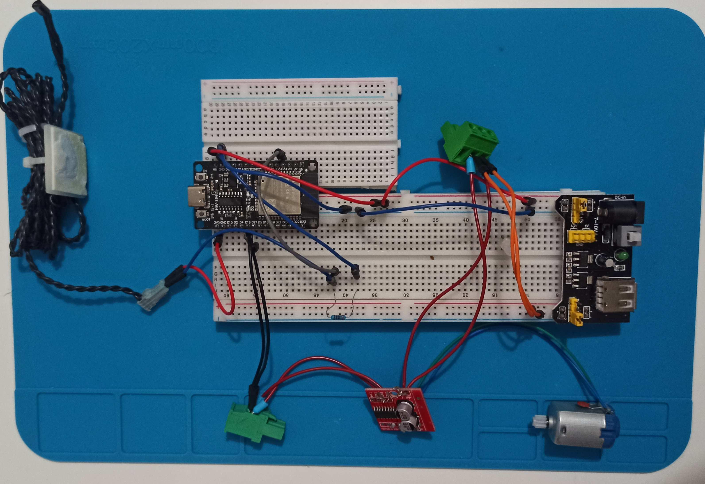
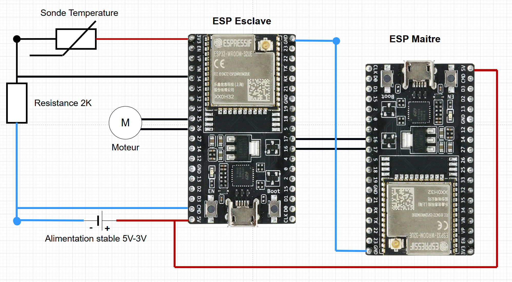
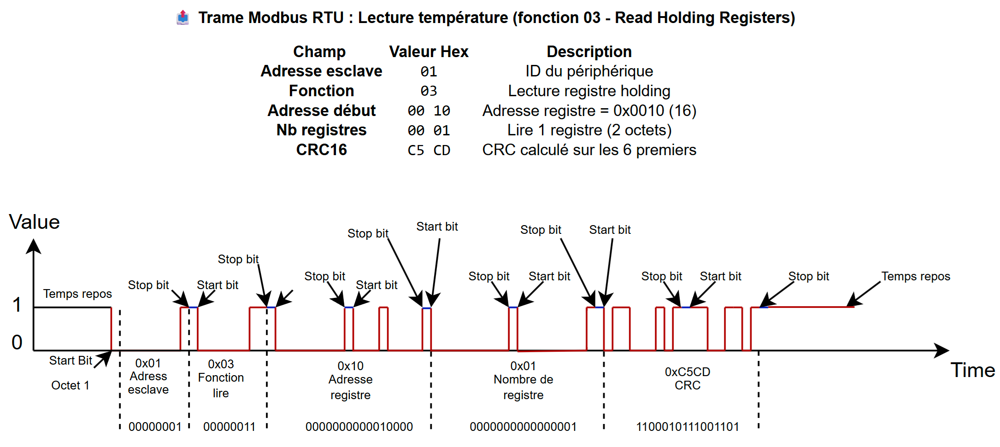
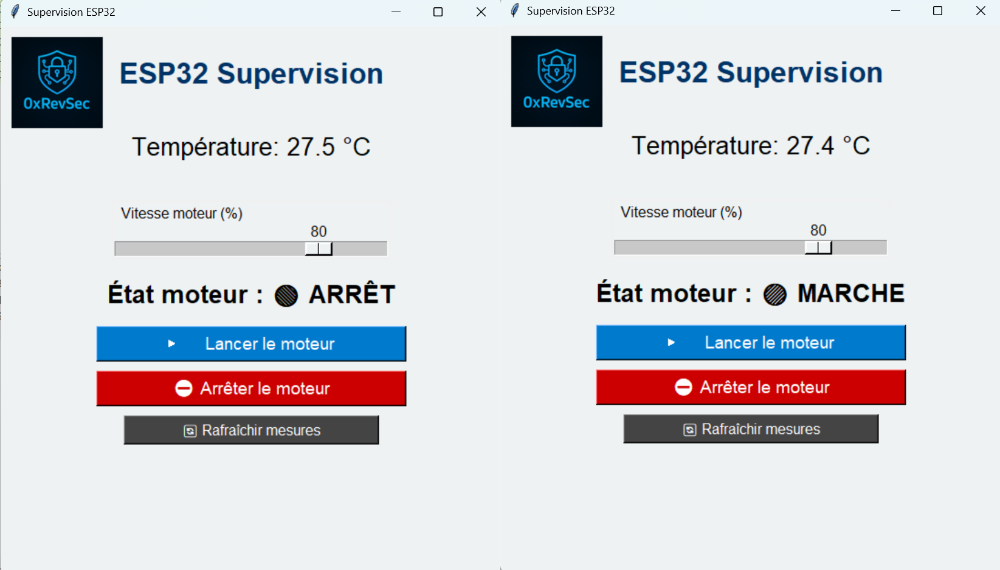
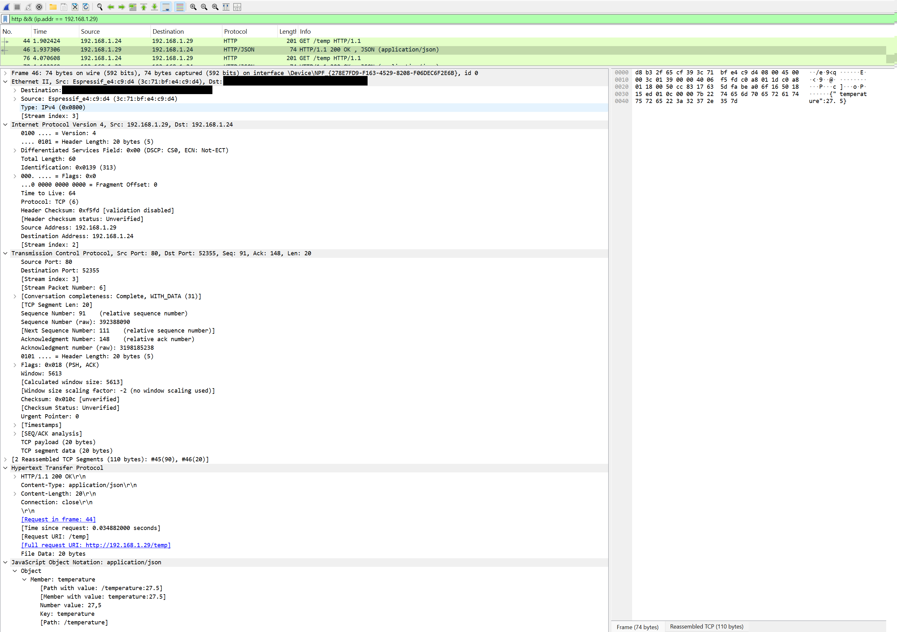

Projet Modbus RTU entre deux ESP32 (UART‑TTL direct)
1. Contexte & Objectif
Dans l’automatisation industrielle, Modbus est un protocole populaire pour échanger des données entre un maître et plusieurs esclaves via une ligne série.
Ici, nous montrons comment réaliser un échange Modbus RTU sans module RS‑485, en liaison directe UART‑TTL entre deux ESP32, pour lire la température d’une sonde et piloter un moteur DC. La commande utilisateur se fera depuis un PC sur interface
graphique (supervision). Le esp32 maitre aura un mini serveur HTTP et pourra communiquer avec la supervision en WIFI.
Ce projet a pour but de comprendre en bas niveau ce que nous comprenons en surface.
- Commande par supervision PC : envoi de requêtes HTTP au serveur hébergé sur l’ESP32 maître.
- ESP32 maître interroge l’esclave et affiche la valeur ou demande de pilotage le moteur (requête Modbus).
- ESP32 esclave lit la température, active le moteur et répond aux requêtes (requête Modbus).
- Communication point‑à‑point, full‑duplex, via TX/RX croisés.
- Analyse des paquets HTTP et requête modbus.
- Ajout convertisseur RS485 et test robustesse.
2. Matériel Nécessaire
2.1. Liste des composants
Pour réaliser ce projet, vous aurez besoin de :
- 2 × cartes ESP32 (DevKitC ou équivalent).
- 1 × sonde de température (par exemple, un thermistor NTC).
- 1 × résistance 2K (pour le thermistor).
- 1 × moteur DC + 1 module de pilotage L298N.
- Câbles Dupont mâle-mâle pour les connexions.
- Une alimentation 5 V (avec un régulateur 3.3 V si votre ESP32 le nécessite).
- Un PC avec l'application Python de supervision.
- Un analyseur logique (optionnel mais fortement recommandé pour le débogage).
2.2. Câblage
Voici les connexions essentielles :
Liaison UART-TTL (entre les GPIO 16/17 du maître et de l'esclave) :
- Maître TX (GPIO 17) → Esclave RX (GPIO 16)
- Maître RX (GPIO 16) ← Esclave TX (GPIO 17)
- GND commun entre les deux ESP32.
Sonde de Température (sur l'ESP32 Esclave) :
- 3.3V de l'ESP32 → Une borne du thermistor.
- L'autre borne du thermistor → Une borne de la résistance 2K.
- L'autre borne de la résistance 2K → GND de l'ESP32.
- GPIO 34 (ADC) de l'esclave sur la jonction entre le thermistor et la résistance 2K.
Moteur (sur l'ESP32 Esclave) :
- Module L298N :
- Alimenter le L298N en 5V (bornes +/-).
- Relier IN1 du L298N au GPIO 12 de l'esclave.
- Relier IN2 du L298N au GPIO 13 de l'esclave.
- Connecter les bornes MotorA/MotorB du L298N au moteur DC.

Cablage sur plaquette 
Schema de cablage
3. Théorie du Protocole Modbus et Couches de Communication
Dans l'automatisation industrielle, la communication est vitale. Le protocole Modbus, reconnu pour sa robustesse, est omniprésent. Pour comprendre son fonctionnement et son adaptation aux divers environnements, le Modèle OSI (Open Systems Interconnection) est un cadre indispensable.
3.1. Le Modèle OSI : Une Vue d'Ensemble
Le modèle OSI décompose la communication en sept couches abstraites, chacune ayant une fonction spécifique :
- Couche 7 (Application) : La plus proche de l'utilisateur final. Elle définit le "quoi" et le "comment" de la communication (ex: lire une température). C'est là que résident Modbus RTU et Modbus TCP/IP.
- Couche 4 (Transport) & Couche 3 (Réseau) : Pertinentes pour Modbus TCP/IP (protocoles TCP et IP).
- Couche 1 (Physique) : Décrit les spécifications électriques et mécaniques de la transmission des bits bruts. On y trouve UART-TTL, RS-232, RS-485, et Ethernet.
3.2. Le Protocole Modbus RTU : Le "Langage" Applicatif (Couche 7)
Modbus RTU (Remote Terminal Unit) est un protocole de la couche application (OSI 7). Il définit le format des messages (adresse esclave, code de fonction, données, CRC) permettant aux appareils de dialoguer selon un modèle maître/esclave. Sa force majeure est son indépendance vis-à-vis de la couche physique : les messages Modbus RTU restent identiques, quel que soit le support de transmission sous-jacent.
3.3. La Couche Physique dans Notre Projet : UART-TTL (Couche 1)
Dans notre projet pédagogique, nous utilisons l'UART-TTL (OSI 1) comme couche physique. L'UART est un module série intégré aux microcontrôleurs, gérant la conversion parallèle-série. TTL fait référence aux niveaux de tension (0V/3.3V ou 5V). La connexion est directe avec 3 fils (TX, RX, GND). La configuration "9600 bauds 8N1" est logicielle et définit la vitesse (9600 bits/s), 8 bits de données, pas de parité, et 1 bit de stop. Cependant, le TTL est très sensible au bruit et limité à quelques mètres.
3.4. Le Standard Industriel : RS-485 (Couche 1 - Robustesse)
Pour l'industrie, le RS-485 (OSI 1) est le standard grâce à sa robustesse :
- Longue Distance : Jusqu'à 1200 mètres.
- Immunité au Bruit : Utilise la transmission différentielle (différence de tension entre deux fils A et B), annulant les interférences.
- Multi-points : Un seul bus peut connecter de nombreux appareils (souvent 32+ sans répéteur).
- Migration : Pour passer de l'UART-TTL au RS-485, un module convertisseur RS-485 (ex: MAX485) est nécessaire. Il adapte les niveaux de tension sans modifier la logique Modbus RTU de l'ESP32.
3.5. Autres Couches Physiques et Variantes de Modbus
Le protocole Modbus est flexible et peut être adapté à d'autres supports ou variantes :
- RS-232 (OSI 1) : Interface série plus ancienne, point-à-point (max ~15m), sensible au bruit.
- Fibre Optique (OSI 1) : Transmission par lumière. Nécessite des convertisseurs série-vers-fibre. Offre des distances extrêmes (km) et une immunité totale aux interférences et à l'isolation électrique.
- Sans Fil (OSI 1) : Via des passerelles radio (Wi-Fi, LoRa, 4G/5G) qui encapsulent les trames Modbus RTU. Propose une installation flexible, mais peut introduire latence et défis de fiabilité/sécurité.
- Modbus TCP/IP sur Ethernet (OSI 1-7) : Une variante distincte de Modbus. Elle encapsule les messages Modbus directement dans TCP/IP (OSI 3/4) et utilise Ethernet (OSI 1). Offre un haut débit, s'intègre aux réseaux IT et permet un accès distant. C'est la norme pour les grandes installations connectées.
3.6. Détails de la Trame UART Série
Pour une communication UART Modbus RTU, chaque octet est encodé avec :
- 1 bit de start (0) : Indique le début de la transmission d'un caractère.
- 8 bits de données : Les octets Modbus eux-mêmes.
- 1 bit de stop (1) : Indique la fin du caractère.
- Délai inter-trame (3.5T) : Un silence d'au moins 3,5 caractères de temps (`3.5 * (10 bits / baud rate)`) marque la fin d'une trame Modbus complète et le début potentiel d'une nouvelle.
- Calcul du CRC Modbus : Le CRC-16 Modbus est une somme de contrôle ajoutée à la fin de chaque trame pour garantir son intégrité. Si le CRC reçu ne correspond pas au CRC calculé par le récepteur, la trame est considérée comme corrompue et ignorée.

4. Implémentation ESP32 : Le Code (Lien code : github.com)
Cette section décrit la structure du code et son fonctionnement sur les deux ESP32, maître et esclave.
4.1. Structure des Fichiers du Projet
Pour une organisation claire, notre projet est structuré en plusieurs fichiers :
- Dossier
include/: Contient les définitions et fonctions réutilisables.modbus_master.h: Fonctions Modbus pour l'ESP32 maître (client).modbus_slave.h: Fonctions Modbus pour l'ESP32 esclave (serveur).moteur.h: Fonctions de bas niveau pour contrôler le moteur.temperature.h: Fonction pour lire la température.
- À la racine du projet : Les fichiers de code principal.
master.cpp: Le programme principal pour l'ESP32 agissant en maître Modbus et hébergeant le serveur web.slave.cpp: Le programme principal pour l'ESP32 agissant en esclave Modbus, gérant le moteur et la sonde de température.
4.2. Le Côté Esclave (slave.cpp et modbus_slave.h)
L'ESP32 esclave représente un équipement industriel distant. Il attend des commandes Modbus sur le bus série pour agir (piloter le moteur) ou fournir des données (température).
slave.cpp : Le Cœur de l'Esclave
Ce fichier gère la logique principale de l'esclave :
- Initialisation (
setup) : Configure le port série USB pour le débogage (Serial.begin(115200)). Configure le port série UART 1 de l'ESP32 (modbus.begin(9600, SERIAL_8N1, 16, 17)) pour la communication Modbus sur les GPIO 16 (RX) et 17 (TX). Initialise les broches du moteur (moteur_init()) et la résolution de l'ADC pour la température (analogReadResolution(12)). - Boucle Principale (
loop) : Traitement des Requêtes Modbus :- Attend un minimum de 8 octets sur le port Modbus (
modbus.available() < 8). - Lit la requête entrante (
modbus.readBytes(req, 8)). - Effectue une validation cruciale : vérifie l'ID de l'esclave (
req[0] != SLAVE_ID) et le CRC de la trame (crcReq != calcCRC(req, 6)). Une requête invalide est ignorée. - Extrait le code de fonction Modbus (
func = req[1]) et l'adresse du registre (reg = (req[2] << 8) | req[3]). - Gestion de la Lecture de Température (Fonction 0x03, Registre
REG_TEMP) :- Appelle
lire_temperature()pour obtenir la valeur. - Met la température à l'échelle (
int(t * 10)) et la convertit en un entier sur 16 bits. - Construit manuellement la **trame de réponse Modbus** incluant l'ID de l'esclave, le code de fonction, le nombre d'octets de données, les deux octets de la valeur, et le CRC calculé.
- Envoie la réponse sur le bus Modbus (
modbus.write(rsp, 7)).
- Appelle
- Gestion de la Commande Moteur (Fonction 0x06, Registre
REG_MOTOR) :- Extrait la valeur de commande (
val) de la requête. - Applique une logique simple : `0` pour arrêter (
moteur_stop()), `1-500` pour avancer (moteur_avance()), `>500` pour reculer (moteur_recule()). - Envoie un écho de la requête comme réponse standard pour la fonction 0x06 (
modbus.write(req, 8)).
- Extrait la valeur de commande (
- `sendException(modbus, func, 0x02);` : Si la requête n'est pas reconnue ou est mal formée, une **réponse d'exception Modbus** (ici, "Adresse de donnée illégale") est envoyée au maître.
- Attend un minimum de 8 octets sur le port Modbus (
modbus_slave.h : Outils Modbus pour l'Esclave
Ce fichier fournit les définitions et fonctions génériques :
SLAVE_ID,REG_TEMP,REG_MOTOR: Constantes définissant l'ID de l'esclave (1) et les adresses des registres (0x0001 pour température, 0x0002 pour moteur).calcCRC(const uint8_t* data, size_t len): Fonction essentielle pour le calcul du **CRC-16 Modbus**, utilisée pour valider l'intégrité des trames.sendException(...): Fonction pour formater et envoyer une trame d'exception Modbus en cas d'erreur.
moteur.h et temperature.h : Abstraction Matérielle
Ces fichiers contiennent des fonctions simples pour abstraire les interactions matérielles :
moteur.h: `moteur_init()`, `moteur_avance()`, `moteur_recule()`, `moteur_stop()` pour le contrôle du moteur.temperature.h: `lire_temperature()` pour la lecture et conversion de la température du thermistor.
4.3. Le Côté Maître (master.cpp et modbus_master.h)
L'ESP32 maître est le "cerveau" du système. Il agit comme un serveur web recevant des commandes d'un navigateur, puis traduit ces commandes en requêtes Modbus pour l'esclave.
master.cpp : Le Cœur du Maître et du Serveur Web
Ce fichier orchestre la connectivité Wi-Fi, le serveur web et l'interface avec le bus Modbus.
- Initialisation (
setup) : Initialise le débogage série (Serial.begin(115200)). Connecte l'ESP32 au réseau Wi-Fi (WiFi.begin(ssid, password)) pour rendre le serveur web accessible. Configure le port série UART 1 pour Modbus (modbus.begin(9600, SERIAL_8N1, 16, 17)) avec les mêmes paramètres que l'esclave.modbusMutex = xSemaphoreCreateMutex();: **Crucial pour la gestion de la concurrence !** Un **mutex (sémaphore binaire)** est créé pour garantir que seul un seul processus (une requête web à la fois) accède au bus Modbus, évitant ainsi la corruption des données.- Configure les routes HTTP du serveur web (ex: `/modbus/start` appelle `handleModbusStart()`). Le serveur est ensuite démarré (
server.begin()).
- Boucle Principale (
loop) : Gestion du Serveur Web : `server.handleClient();` est la ligne principale qui surveille les requêtes HTTP entrantes et appelle les fonctions de gestion appropriées. - Fonctions de Gestion des Requêtes Web (Handlers) :
- Ces fonctions sont appelées par le serveur web lorsque des requêtes HTTP spécifiques sont reçues. Elles utilisent le mutex pour gérer l'accès au bus Modbus.
- `handleModbusStart()` :
- Tente d'acquérir le mutex (
xSemaphoreTake(modbusMutex, ...)). Si le bus est occupé, renvoie un code d'état 503. - Analyse le paramètre `vitesse` de la requête web.
- Appelle `modbusWriteRegister()` pour envoyer la commande Modbus à l'esclave.
- Libère le mutex (
xSemaphoreGive(modbusMutex)).
- Tente d'acquérir le mutex (
- `handleModbusStop()` : Similaire, mais envoie une commande d'arrêt moteur.
- `handleTemp()` :
- Acquiert le mutex.
- Appelle `modbusReadRegister()` pour lire la température brute de l'esclave.
- Libère le mutex.
- Convertit la valeur brute en température réelle et renvoie une réponse JSON au navigateur web.
modbus_master.h : Outils Modbus pour le Maître
Ce fichier fournit les fonctions clés permettant au maître d'interagir avec le bus Modbus :
SLAVE_ID,REG_TEMP,REG_MOTOR: Mêmes définitions que côté esclave pour la cohérence.calcCRC(...): La même fonction de calcul du CRC-16 est présente.modbusWriteRegister(...): Construit et envoie une requête Modbus "Write Single Register" (fonction 0x06). Attend la réponse de l'esclave avec un **timeout** (500ms) et valide la réponse reçue (CRC, ID, fonction, et les données d'écho).modbusReadRegister(...): Construit et envoie une requête Modbus "Read Holding Registers" (fonction 0x03). Attend la réponse avec timeout, valide la réponse, et extrait la valeur lue.
5. Supervision : L'Interface Homme-Machine (IHM) Python
Cette partie du projet est essentielle car elle constitue l'Interface Homme-Machine (IHM). C'est un script Python qui s'exécute sur un ordinateur et qui dialogue avec le **serveur web embarqué sur l'ESP32 Maître**. Son objectif est de fournir un moyen visuel et interactif pour surveiller la température et contrôler le moteur à distance.
5.1. Fonctionnalités Clés du Script de Supervision
Le script Python est conçu pour être un tableau de bord en temps réel :
- Interaction avec l'ESP32 Maître : La constante
ESP32_IP = "192.168.1.29"définit l'adresse IP de l'ESP32 Maître, vers laquelle toutes les requêtes HTTP sont envoyées. - Lecture de la Température (
get_temperature()etread_data()) :get_temperature()interroge l'ESP32 Maître via HTTP GET (http://<ESP32_IP>/temp). Elle inclut un **mécanisme de re-tentative** et gère le code de statut **503 (Bus Modbus occupé)** envoyé par l'ESP32, en réessayant après un court délai sans afficher d'erreur immédiate.- La réponse JSON est parsée pour extraire la température, et `read_data()` met à jour l'affichage dans l'IHM.
- Commandes Moteur (
start_motor()etstop_motor()) :start_motor()récupère la vitesse d'un curseur Tkinter, construit une URL avec ce paramètre (http://<ESP32_IP>/modbus/start?vitesse=<valeur>), envoie la requête HTTP, et met à jour l'état visuel du moteur (🟢 MARCHE / ⚠️ Erreur) en fonction de la réponse HTTP.stop_motor()envoie une requête HTTP àhttp://<ESP32_IP>/modbus/stoppour arrêter le moteur.
- Mise à Jour Automatique (
auto_update()) : La ligne `root.after(2000, auto_update)` programme un rafraîchissement périodique des mesures toutes les 2 secondes, offrant une supervision "en direct".
5.2. Interface Graphique Utilisateur (GUI) avec Tkinter
Le script utilise la bibliothèque Tkinter pour construire l'interface visuelle :
- Fenêtre Principale (
root = tk.Tk()) : Crée la fenêtre de l'application. - Éléments d'Affichage : Des
tk.Labelpour le titre, la température et l'état du moteur. Untk.Scale(curseur) permet de sélectionner la vitesse du moteur. - Boutons de Commande : Des
tk.Buttonpour "Lancer le moteur", "Arrêter le moteur" et "Rafraîchir mesures", chacun lié à sa fonction Python. - Stylisation : Utilisation de paramètres comme `bg` (couleur de fond), `fg` (couleur du texte) et `font` pour l'esthétique.
- Boucle Principale de l'IHM (
root.mainloop()) : Lance la boucle d'événements Tkinter, gérant les interactions utilisateur et les mises à jour de l'interface.
5.3. Flux de Données et Contrôle
Le script de supervision Python complète la chaîne de communication :
- L'utilisateur interagit avec l'IHM Python.
- Le script Python envoie des requêtes HTTP à l'ESP32 Maître.
- L'ESP32 Maître (serveur web) interprète ces requêtes.
- L'ESP32 Maître traduit les commandes HTTP en requêtes Modbus RTU et les envoie via UART-TTL à l'ESP32 Esclave.
- L'ESP32 Esclave lit la température ou pilote le moteur.
- L'ESP32 Esclave envoie des réponses Modbus RTU à l'ESP32 Maître.
- L'ESP32 Maître (client web) formate ces réponses Modbus et les renvoie en tant que réponses HTTP au script Python.
- Le script Python met à jour l'IHM pour refléter l'état du système.

Supervision (Moteur en marche/Arrette)
6. Sniffing des Trames et Analyse Réseau
6.1. Sniffing des Trames UART avec un Analyseur Logique
Pour une compréhension approfondie du protocole Modbus RTU sur UART-TTL, l'utilisation d'un analyseur logique est un outil de débogage et d'analyse indispensable.
- Branchement : Connectez l'analyseur logique aux broches TX et RX de chaque ESP32 (et au GND commun). Ça vous permet de capturer les signaux électriques échangés sur le bus série en temps réel.
- Décodage UART et Visualisation : Configurez le décodeur UART de votre analyseur logique avec les bons paramètres : **9600 bauds, 8N1** (8 bits de données, pas de parité, 1 bit de stop). L'analyseur affichera chaque octet capturé en **hexadécimal**, ce qui vous permettra de visualiser directement la séquence des octets de la trame Modbus. C'est parfait pour vérifier la conformité des trames envoyées et reçues par vos ESP32.
- Synchronisation des Trames : Le décodeur UART de l'analyseur logique utilise le **silence inter-trame (≥ 3,5T)** pour délimiter automatiquement les trames Modbus complètes. Ça facilite grandement leur lecture et leur analyse, en vous aidant à distinguer clairement les requêtes des réponses.
- Identification Manuelle des Octets Modbus : Avec la visualisation hexadécimale, vous pouvez vérifier manuellement que l'adresse de l'esclave, le code de fonction, les données et le CRC correspondent aux spécifications du protocole Modbus RTU. C'est crucial pour valider le bon fonctionnement de votre implémentation et diagnostiquer d'éventuels problèmes de communication.
6.2. Sniffing du Trafic HTTP Wi-Fi avec Wireshark (Supervision)
Étant donné que la supervision de notre système passe par une communication **HTTP non chiffrée** sur le réseau Wi-Fi, il est possible d'observer et d'analyser ce trafic à l'aide d'un outil comme **Wireshark**.
- Capture de Paquets : Utilisez Wireshark sur un PC connecté au même réseau Wi-Fi que l'ESP32 maître. Lancez une capture sur votre interface Wi-Fi. Vous pourrez alors voir tous les paquets transitant entre votre PC (exécutant l'IHM Python) et l'ESP32 maître.
- Analyse des Requêtes et Réponses HTTP : Dans Wireshark, filtrez le trafic pour n'afficher que les paquets HTTP (par exemple, en tapant `http` dans la barre de filtre). Vous pourrez inspecter le contenu des requêtes GET (pour lire la température, par exemple) et les réponses JSON envoyées par l'ESP32.
- Identification des Données en Clair : Cette analyse démontrera que les commandes (comme la vitesse du moteur) et les données (la température) sont transmises en clair sur le réseau. C'est une vulnérabilité majeure en cybersécurité, soulignant l'importance du chiffrement (HTTPS) pour protéger les informations sensibles.
Capture wireshark requête GET température

Capture wireshark réponse GET température
7. Extraction et Analyse du Firmware ESP32
7.1. Dump du firmware via esptool.py
Pour lire la mémoire flash de l’ESP32 et en extraire le firmware, utilisez esptool.py :
# Installer esptool si besoin
pip install esptool
# Lire 4 Mo de flash (ajustez la taille selon votre ESP32)
esptool.py --port /dev/ttyUSB0 read_flash 0x00000 0x400000 firmware.bin
Extraction
7.2. Ouverture du binaire avec HxD
Ouvrez firmware.bin dans l’éditeur hexadécimal HxD (Windows) :
- Fichier → Ouvrir → sélectionnez
firmware.bin. - Activez « Affichage texte » pour voir à droite la colonne ASCII.
Binaire
8. Perspectives d'Évolution
Ce projet de base ouvre la voie à de nombreuses améliorations pour le rendre plus robuste et adapté à un environnement industriel réel.
8.1. Migration vers RS-485 (bus différentiel)
- Ajout de modules **MAX485** ou équivalents sur chaque ESP32 pour convertir les signaux TTL en RS-485. Cela implique la gestion de la broche DE/RE (Data Enable/Receive Enable) pour contrôler la direction de la transmission.
- La migration vers le **RS-485** permettra une communication fiable sur de **plus longues distances** et la mise en place d'une **topologie multi-drop** (plusieurs esclaves sur le même bus).
8.2. Support multi-registres et multi-fonctions
- Actuellement, le projet ne gère que la lecture d'un seul registre (température, fonction 0x03) et l'écriture d'un seul registre (moteur, fonction 0x06). L'implémentation de fonctions Modbus supplémentaires, comme l'**écriture de registres multiples (0x10)** ou la **lecture d'entrées discrètes (0x02)**, rendrait le système plus polyvalent.
8.3. Gestion d’erreurs et timeout
- Améliorer la robustesse du maître en implémentant des mécanismes de **retransmissions** en cas de non-réponse de l'esclave ou de réponse invalide.
- Mettre en place un **journal d'erreurs** détaillé pour faciliter le débogage et la maintenance.
8.4. Intégration réseau (MQTT, OPC UA)
- Pour une intégration plus poussée dans des systèmes d'information industriels (IIoT), l'ESP32 maître pourrait être étendu pour :
- Publier les mesures (température, état moteur) via le protocole **MQTT** vers un courtier.
- Agir comme un client **OPC UA** pour s'intégrer à des systèmes SCADA industriels.
9. Sécurité & Hacking Modbus
La simplicité de Modbus, bien que bénéfique, le rend également vulnérable si des mesures de sécurité ne sont pas prises, surtout lorsqu'il est connecté à un réseau IP.
9.1. Menaces Modbus : injection, spoofing
- Injection de trames malveillantes : Un attaquant ayant accès au bus Modbus (physiquement ou via un réseau non sécurisé) pourrait injecter de fausses commandes pour falsifier les données ou piloter les équipements de manière non autorisée.
- Spoofing : Un attaquant pourrait se faire passer pour un maître ou un esclave légitime pour intercepter ou manipuler la communication.
9.2. Attaques par déni de service
- L'**inondation du bus** avec un grand nombre de requêtes ou de données inutiles peut saturer la liaison et bloquer la communication légitime, entraînant un déni de service du système de contrôle.
9.3. Analyse passive des trames UART
- Le **sniffing** avec un **analyseur logique** sur les broches TX/RX permet à un attaquant d'observer passivement le flux de données Modbus, de comprendre la logique de communication et d'identifier les registres critiques sans altérer le fonctionnement. Cette technique est souvent utilisée pour la reconnaissance avant une attaque.
9.4. Sniffing réseau Wi-Fi HTTP (supervision)
- Étant donné que la supervision utilise une communication Wi-Fi **HTTP non chiffrée**, un outil comme **Wireshark** peut facilement **capturer les paquets HTTP** entre le PC et l'ESP32 maître. Cela exposerait les commandes (ex: vitesse moteur) et les données (température) en clair, posant un risque de confidentialité et d'intégrité si l'accès au réseau Wi-Fi n'est pas sécurisé. L'analyse des entêtes et du contenu des requêtes HTTP est cruciale pour identifier d'éventuelles vulnérabilités.
10. Conclusion Générale
10.1. Bilan du projet
Ce projet a permis le déploiement complet d'un système Modbus RTU bas-niveau entre deux ESP32, incluant une analyse approfondie de la couche physique et liaison. Il a également mis en lumière l'intégration d'une interface de supervision web, complétant ainsi une chaîne de commande et de mesure de bout en bout.
10.2. Limites de la version UART directe
La version actuelle, utilisant l'UART-TTL direct, présente des limites notables : une **portée limitée** (≤ 5 mètres), une restriction à deux nœuds seulement, et une sensibilité inhérente au bruit et aux interférences.
10.3. Intégration possible de tout type d’E/S
Le cœur du protocole Modbus est sa polyvalence. Le système développé peut être étendu pour intégrer tout type d'entrées/sorties (E/S) industrielles : capteurs de pression, de niveau, de débit, relais, variateurs de vitesse, LEDs, et tout autre module lisible ou commandable via Modbus.
10.4. Ouvertures industrielles : robustesse, cybersécurité
Pour une application industrielle réelle, des évolutions sont indispensables :
- La migration vers le **RS-485** est cruciale pour la robustesse et la capacité à gérer un bus multi-drop avec de nombreux esclaves.
- Le renforcement de la **cybersécurité** (chiffrement des communications, authentification des appareils) est impératif pour protéger le système contre les menaces.